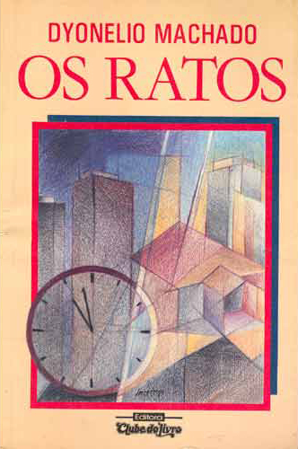
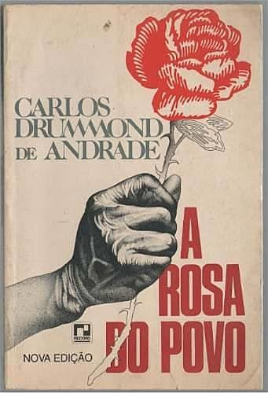

Acervo Literário

Vidas Secas
Graciliano Ramos
- 1938

Os Ratos
Dyonélio Machado
- 1935

A rosa do povo
Carlos Drummond de Andrade
- 1945
Entenda mais sobre a Música
As rosas não falam
Cartola foi um dos maiores compositores de samba do Brasil, as musicas dele foram fundamentais na evolução do samba durante essa época.
Com que roupa?
Conhecido por suas composições inovadoras e suas letras sofisticadas, Noel Rosa é um dos grandes nomes do samba durante essa época.
O Que É Que A Baiana Tem?
As músicas de Dorival Caymmi frequentemente abordavam a vida e as questões sociais do povo brasileiro, característica marcante dessa fase do Modernismo.